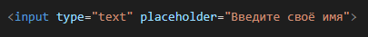
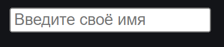
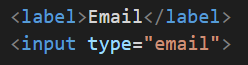
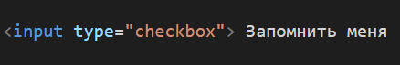
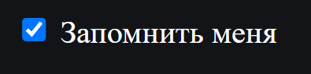
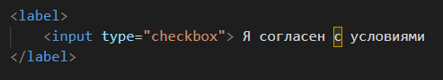
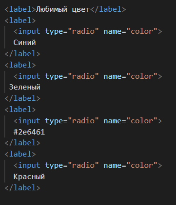
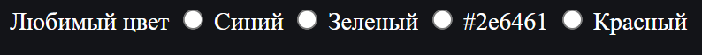
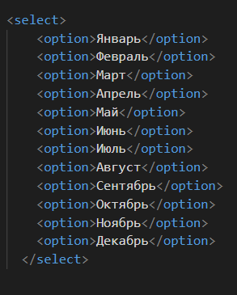
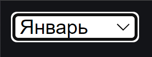

HTML формы
HTML формы используются для создания интерактивных элементов на веб-странице, которые позволяют пользователям вводить информацию и отправлять ее на сервер. Формы могут содержать различные типы полей ввода, такие как текстовые поля, чекбоксы, радиокнопки и выпадающие списки.
Как создавать формы?
Основной элемент формы является тег <form>. Этот тег используется для определения начала и конца формы. Внутри тега <form> можно использовать различные типы элементов ввода, такие как <input>, <textarea> и <select>.
Необходимы следующие атрибуты:
<input>- action содержит адрес, который определяет, куда будет отправлена информация формы;
- method может быть либо GET, либо POST и определяет, как будет отправлена информация формы.
Тег <input>
Тег <input> используется для создания различных типов полей ввода, таких как текстовое поле, чекбокс. Вы можете изменить тип поля ввода, указав атрибут type с соответствующим значением, например "text" для текстового поля и "checkbox" для чекбокса
Текстовые поля
- <input type="text"> - для ввода текста, допускает любой тип символов
- <input type="email"> - для ввода email
- <input type="password"> - для ввода паролей, символы показываются как точки
- <input type="number"> - для ввода чисел, могут быть использованы клавиши вверх/вниз
- <input type="tel"> - для ввода номера телефона
- <textarea></textarea> - похож на input, но может быть изменен размер поля
Хотя эти поля очень похожи и позволяют пользователям вводить текст любого рода (даже неправильный), их тип обеспечивает специфическую семантику для ввода, определяя, какую информацию поле должно содержать.
Существует атрибут placeholder, который отображает подсказывающих текст, который исчезнет, как только будет введён некоторый текст.
Отображение в браузере:
Использование <label>
Так как элементы формы сами по себе не очень описательны, им, как правило, предшествует текстовая метка.
Хотя вы можете применять короткие абзацы для описания элементов формы, использование <label> является семантически более правильным, потому что они существуют только в формах
Флажки
Флажки — это элементы формы, которые имеют только два состояния: включено или выключено. Они в основном позволяют пользователю сказать: «Да» или «Нет» для чего-то.
Вот как оно выглядит:
Поскольку может оказаться сложно щёлкнуть по небольшому флажку, рекомендуется поместить флажок и его описание внутрь <label>. Вы можете щёлкнуть по тексту чтобы переключить флажок.
По умолчанию флажок выключен. Вы можете пометить его включенным, просто используя атрибут checked.
Переключатели
Вы можете предоставить пользователю список вариантов на выбор с помощью переключателей.
Для работы этого элемента формы, ваш HTML-код должен сгруппировать список переключателей вместе. Это достигается с помощью одного и того же значения для атрибута name:
Отображение в браузере:
Когда все переключатели используют одинаковое значение атрибута name, выбор одного из вариантов отменит все остальные.
Выпадающие меню
Если количество вариантов для выбора занимает слишком много места, вы можете воспользоваться выпадающими меню <select>.
Вот как это выглядит:
Задание
Попробуйте создать форму регестрации для своего сайта.